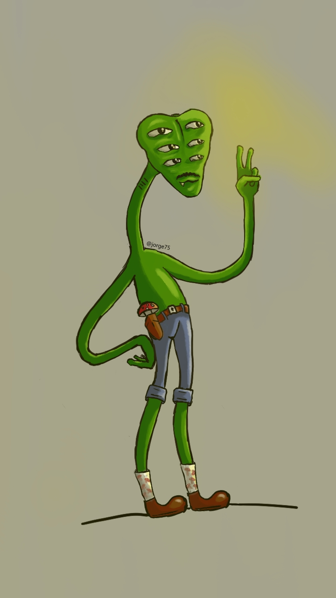

Jorge Andrés Moreno Quintana
Mi práctica artística explora las relaciones entre el cuerpo, la identidad, la percepción y el entorno a través de medios visuales, digitales e interactivos. Al experimentar con imágenes, narrativas y espacios, busco plantear preguntas sobre la sensibilidad, la vulnerabilidad y las formas en que experimentamos el mundo y nos relacionamos con él.
Marcador Texto provisional: la declaración corta es una síntesis inicial, y la versión larga es un borrador construido solo a partir de ella. Reemplaza ambas en content/es.json y content/en.json → statement cuando tengas la declaración definitiva.

Declaración artística
Mi práctica parte de una pregunta sencilla y difícil: cómo se cruzan el cuerpo, la identidad, la percepción y el entorno. No los trato como temas separados, sino como partes de una misma experiencia que cambia según desde dónde se mire.
Trabajo con medios visuales, digitales e interactivos porque cada uno permite una forma distinta de acercarse a esa pregunta. Experimento con imágenes, narrativas y espacios, y dejo que el proceso abra preguntas en lugar de cerrarlas.
Lo que busco es plantear preguntas sobre la sensibilidad, la vulnerabilidad y las maneras en que vivimos el mundo y nos relacionamos con él.
Disciplinas
Marcador Lista borrador tomada de las páginas de proyectos. Edítala libremente.
Herramientas
Herramientas por añadir.
Información profesional
- Residencia
- Por añadir
- Disponible para
- Por añadir
- Formación
- Por añadir
- Exposiciones
- Por añadir
- Enlace a CV / hoja de vida
- Por añadir
Contacto
Marcador Los enlaces sin configurar aparecen atenuados. Agrega cada URL en config.json → socials.
Este sitio es el centro. No replica redes sociales.